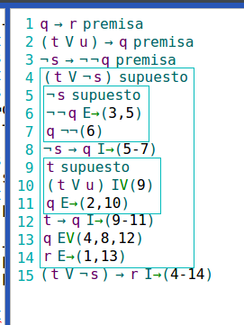
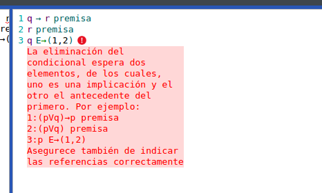

Comprobación de derivaciónes
El validador de derivaciones permite asegurar
el uso correcto de reglas de derivación.
Para utilizarlo se deberá ingresar en el cuadro
de entrada un ejemplo de derivación
en texto plano. como por ejemplo
1. q → r premisa 2. (t V u) → q premisa 3. ¬s → ¬¬q premisa 4. (t V ¬s) supuesto 5. ¬s supuesto 6. ¬¬q E→(3,5) 7. q ¬¬(6) << 8. ¬s → q I→(5-7) 9. t supuesto 10. (t V u) IV(9) 11. q E→(2,10) << 12. t → q I→(9-11) 13. q EV(4,8,12) 14. r E→(1,13) << 15. (t V ¬s) → r I→(4-14)
Y hacer click en el boton comprobar
para ver el siguiente resultado
Para volver al modo de edición basta con hacer click en el area de entrada.
Botones de ayuda
La aplicación provee un conjunto de botones de ayuda para ingresar símbolos que no se encuentran en el teclado físico.
Detección de errores
En caso de encontrar errores, la aplicación los remarcará, para que el usuario pueda detectar el problema.
